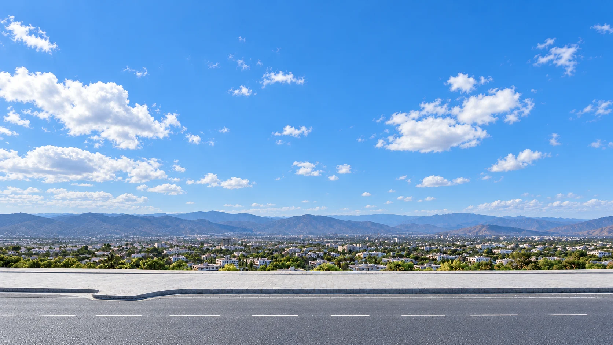
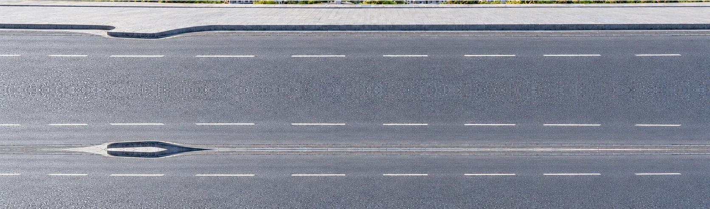

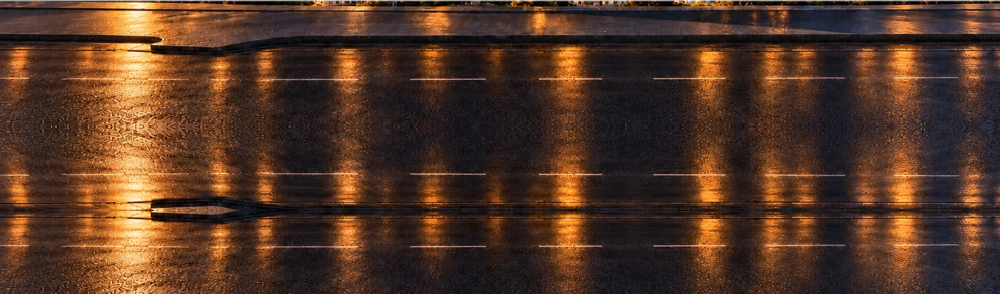
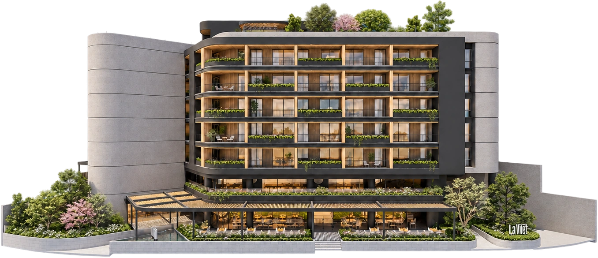
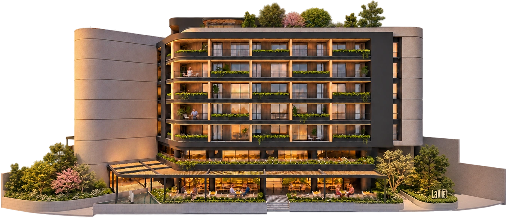
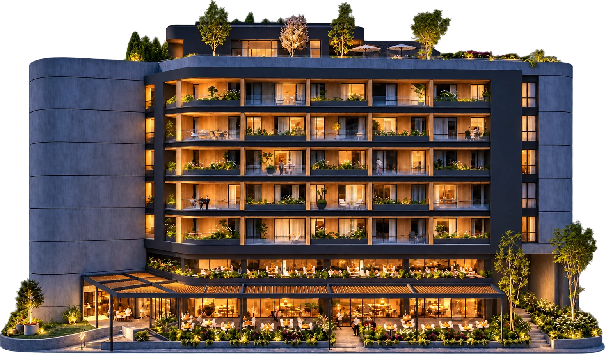
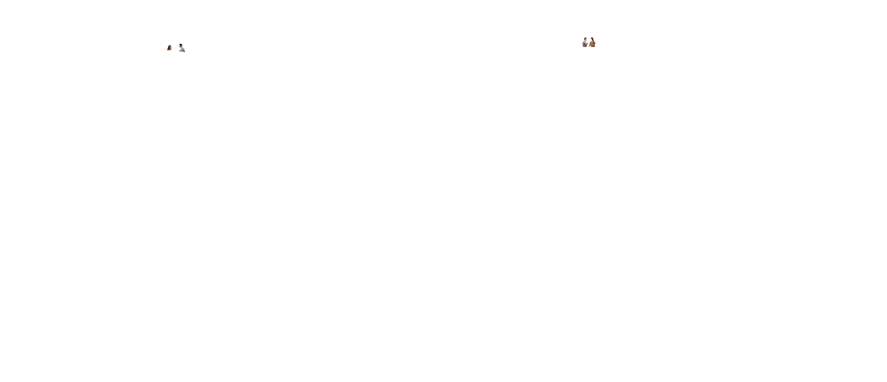
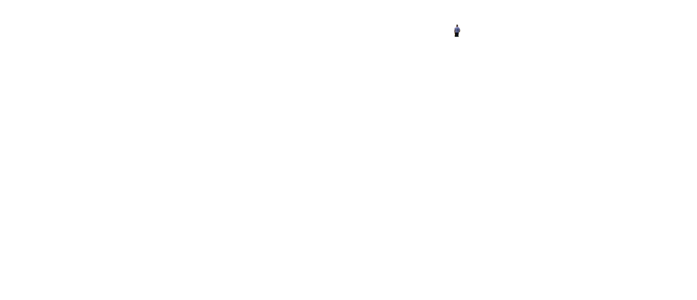
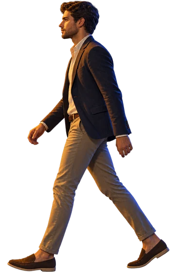
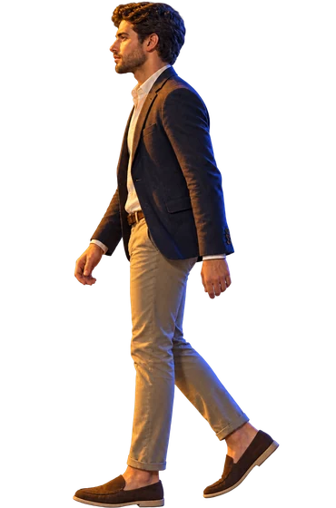
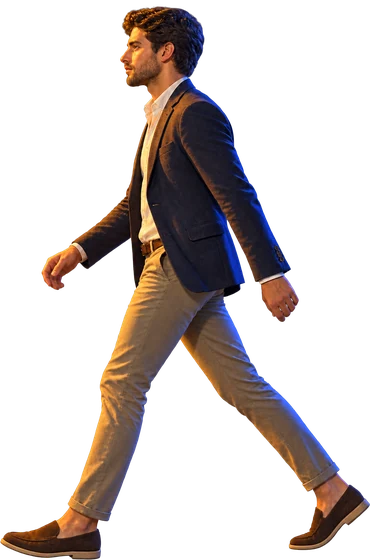
Suites & Apartments
Residencias y plaza comercialen Puertas del Sol, Cuenca.











Suites & Apartments
Residencias y plaza comercialen Puertas del Sol, Cuenca.
Espacios
Cada propiedad se puede comprar para vivir en ella o como inversión.
Sección de ejemplo para probar el efecto del hero al hacer scroll.